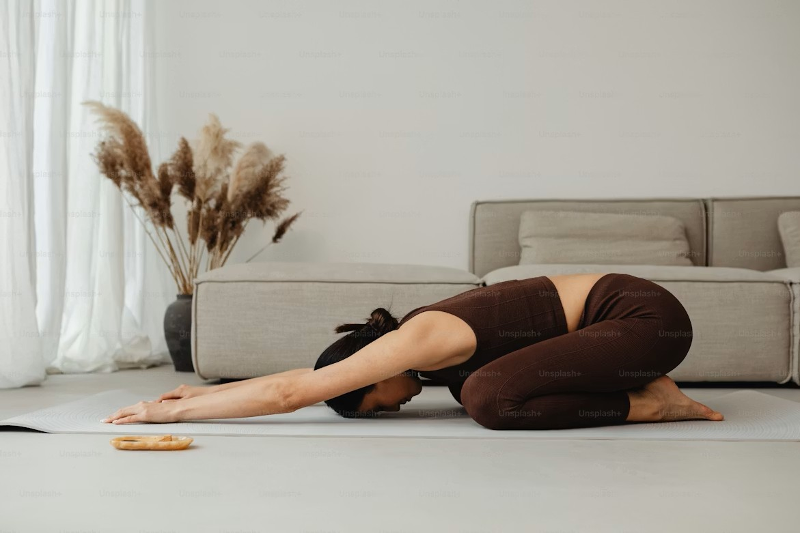

ヨガは、何かをできるようになるためのものではなく、 今の身体に起きていることを、そのまま感じる時間だと考えています。
呼吸や感覚に注意を向けながら、 身体と心が少しずつ近づいていく。 その過程を、静かに見守るような実践です。
無理に伸ばさないこと。 形に合わせようとしないこと。 その日の状態を、そのまま受け取ること。
ここでは、急ぐ必要はありません。 必要なときに、必要な分だけ、 身体と向き合うための場所であればと思っています。
静かな整えのために
WHAT IS THAT?
呼吸や感覚に注意を向けながら、身体と心が少しずつ近づいていく。
その過程を、静かに見守るような実践です。
無理をしない
形に合わせようとするよりも、今の状態をそのまま受け取ること。
頑張りすぎないことも、実践の一部として。
呼吸を確かめる
整えるためよりも、今の呼吸を確かめるために。
少しずつ、自分のペースで進めていきます。

こんなお悩み、ありませんか？
🫧
なんとなく
疲れが抜けない
🌿
肩・首の
こわばり
☁️
気持ちが
落ち着かない
🌙
眠りが
浅い
必要なときに、必要な分だけ。
はじめての方も、静かに読めるページ構成にしています。